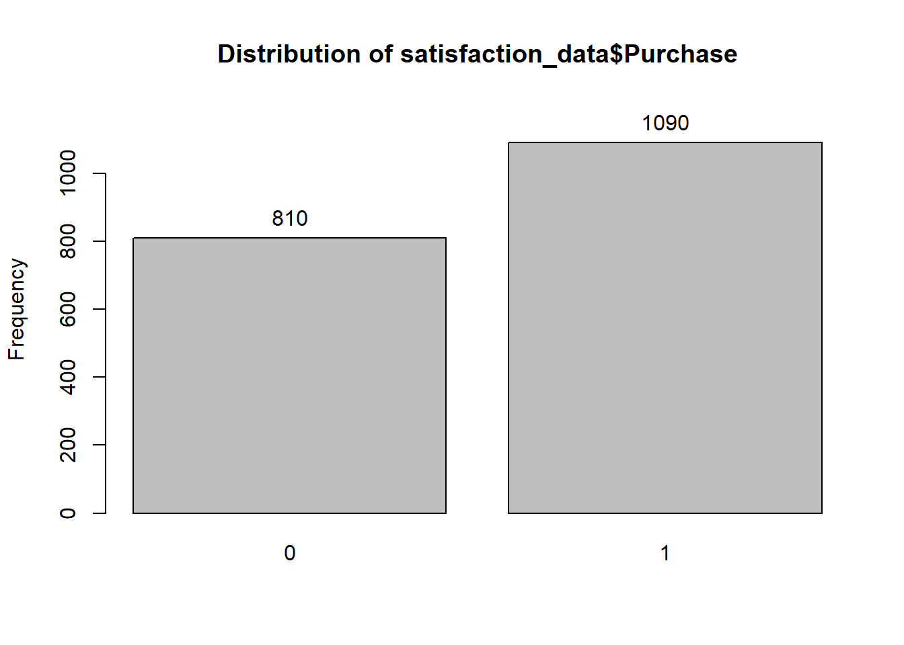

2 Week 2
2.1 Sandwich Store Example
2.1.1 Task Description
The goal is to predict purchase probability and purchase amount based on customer satisfaction.
Data Description: See “Predicting Purchase and Amount Demo.xlsx”
| Variable | Definition |
|---|---|
| Respondent | Respondent ID |
| Purchase | Purchase from the sandwich store in the last month (1= YES, 0= NO) |
| Spending | Amount spent on the sandwich store in the last month |
| OverallSAT | Overall Satisfaction (1= very dissatisfied, 7= very satisfied) |
| Education | Education Level (1= completing or completed High School, 2= Undergraduate Degree, 3= Masters Degree/Professional Degree/PhD) |
| Gender | Gender (0= Male, 1= Female) |
| Age | Age (1= 18 years or younger, 2= 18-55 years old, 3= 56 years or older) |
2.1.2 Analysis using R
We need to make sure all necessary packages are installed. If any of these packages are not installed, write install.packages("<name of package>"). The next step is to include all the libraries we use in this exercise.
library(readxl)
library(dplyr)
library(fBasics)
library(car)
library(epiDisplay)
library(ggplot2)The next step is to import data. We will use the read_excel function to import excel file into R.
# Importing Data
satisfaction_data <- read_excel("Predicting Purchase and Amount Demo.xlsx")Some variables can be represented on an interval scale
- Examples: satisfaction, Income, height, price, and temperature
Categorical variables can only be represented on a nominal scale
- Examples: gender, ethnicity, brand, or location
In R, we can convert all the categorical variables into factors.
# Importing Data
satisfaction_data$Purchase <- as.factor(satisfaction_data$Purchase)
satisfaction_data$Gender <- as.factor(satisfaction_data$Gender)
satisfaction_data$Age <- as.factor(satisfaction_data$Age)
satisfaction_data$Education <- as.factor(satisfaction_data$Education)2.1.2.1 Summary Statistics
2.1.2.1.1 Continous Variables
Review the means of continuous variables.
# Make a list of variables you want summary statistics for
var_list <- c("Spending","OverallSAT")
# Make a data.frame containing summary statistics of interest
summ_stats <- fBasics::basicStats(satisfaction_data[var_list])
summ_stats <- as.data.frame(t(summ_stats))
# Rename some of the columns for convenience
summ_stats <- summ_stats %>% dplyr::select("nobs","Mean", "Stdev", "Minimum", "Maximum")
summ_stats <- summ_stats %>% rename('N'= 'nobs')| N | Mean | Stdev | Minimum | Maximum | |
|---|---|---|---|---|---|
| Spending | 1900 | 43.887158 | 39.548578 | 0 | 112 |
| OverallSAT | 1900 | 5.403684 | 1.375972 | 1 | 7 |
Check if the means and standard deviations “make sense”
Check the minimum and maximum values and see if they are “correct”
2.1.2.1.2 Categorical Variables
Review the frequency distribution of categorical variables.
# Frequency distribution of Purchase
tab1(satisfaction_data$Purchase, cum.percent = TRUE)
## satisfaction_data$Purchase :
## Frequency Percent Cum. percent
## 0 810 42.6 42.6
## 1 1090 57.4 100.0
## Total 1900 100.0 100.0Similarly
# Frequency distribution of Education
tab1(satisfaction_data$Education, cum.percent = TRUE)## satisfaction_data$Education :
## Frequency Percent Cum. percent
## 1 1046 55.1 55.1
## 2 654 34.4 89.5
## 3 200 10.5 100.0
## Total 1900 100.0 100.02.1.2.1.3 Mean of satisfaction and spending by purchase outcomes
library(psych)
summary_by_by_purchase <- describeBy(satisfaction_data[var_list],satisfaction_data$Purchase, mat=TRUE,digits=3)
summary_by_by_purchase <- summary_by_by_purchase %>% dplyr::select("group1","n","mean", "sd", "min", "max")
summary_by_by_purchase <- summary_by_by_purchase %>% rename('Purchase'= 'group1', 'N' = 'n', "Stdev" ='sd')| Purchase | N | mean | Stdev | min | max | |
|---|---|---|---|---|---|---|
| Spending1 | 0 | 810 | 0.000 | 0.000 | 0.0 | 0 |
| Spending2 | 1 | 1090 | 76.501 | 15.173 | 30.8 | 112 |
| OverallSAT1 | 0 | 810 | 4.499 | 1.263 | 1.0 | 7 |
| OverallSAT2 | 1 | 1090 | 6.076 | 1.027 | 1.0 | 7 |
Satisfaction is higher for those who purchase
Spending is zero for those who don’t purchase (make sense; this is a quick data validity check)
2.1.3 Logistic Regression to Predict Purchase Probability Based on Customer Satisfaction
We will fit a logistic regression model to predict purchase probability and purchase amount based on customer satisfaction. The glm function fits generalized linear models, a class of models that includes logistic regression. The syntax of the glm function is similar to that of lm, except that we must pass the argument family = binomial in order to tell R to run a logistic regression rather than some other type of generalized linear model.
# TO specify the level to use as base
satisfaction_data <- within(satisfaction_data, Education <- relevel(Education, ref = "1"))
satisfaction_data <- within(satisfaction_data, Gender <- relevel(Gender, ref = "0"))
satisfaction_data <- within(satisfaction_data, Age <- relevel(Age, ref = "1"))
# Logistic Regression
logistic_reg <- glm(Purchase ~ OverallSAT+Education+Gender+Age, family = "binomial", data = satisfaction_data)
logistic_reg_coeffitients <- summary(logistic_reg)$coefficients- Regression Coefficients
| Estimate | Std. Error | z value | Pr(>|z|) | |
|---|---|---|---|---|
| (Intercept) | -6.219 | 0.415 | -15.002 | 0.000 |
| OverallSAT | 1.228 | 0.059 | 20.705 | 0.000 |
| Education2 | -0.226 | 0.124 | -1.831 | 0.067 |
| Education3 | -0.331 | 0.195 | -1.699 | 0.089 |
| Gender1 | 0.001 | 0.119 | 0.012 | 0.990 |
| Age2 | -0.005 | 0.258 | -0.018 | 0.986 |
| Age3 | 0.012 | 0.296 | 0.039 | 0.969 |
Implies the following regression model:
log(p/1-p) = 1.228*OverallSAT – .226*Education_undergrad – .331*Education_master + .001*Female – .005 Age_1855 +.012 Age_56 – 6.219Confusion Matrix
predict_purchase <- predict(logistic_reg, type="response")
library(caret)
#confusionMatrix(true_value,predicted)
confusion_matrix <- confusionMatrix(as.factor(as.integer(predict_purchase > 0.5)),satisfaction_data$Purchase)
# Matrix
table <- data.frame(confusion_matrix$table)- Accuracy =
(887+644)/(887+644+203+166)
## [1] 0.8057895satisfaction_data %>%
mutate(prob = ifelse(Purchase == "1", 1, 0)) %>%
ggplot(aes(OverallSAT, prob)) +
geom_point(alpha = .15) +
geom_smooth(method = "glm", method.args = list(family = "binomial")) +
ggtitle("Logistic regression model fit") +
xlab("OverallSAT") +
ylab("Probability of Purchase")satisfaction_data %>%
mutate(prob = ifelse(Purchase == "1", 1, 0)) %>%
ggplot(aes(OverallSAT, prob)) +
geom_point(alpha = .15) +
geom_smooth(method = "lm") +
ggtitle("Linear regression model fit") +
xlab("OverallSAT") +
ylab("Probability of Purchase")2.1.4 Linear Regression to Predict Purchase Amount Based on Customer Satisfaction
- Review of Variables
Variable Definition Respondent Respondent ID Purchase Purchase from the sandwich store in the last month (1= YES, 0= NO) Spending Amount spent on the sandwich store in the last month OverallSAT Overall Satisfaction (1= very dissatisfied, 7= very satisfied) Education Education Level (1= completing or completed High School, 2= Undergraduate Degree, 3= Masters Degree/Professional Degree/PhD) Gender Gender (0= Male, 1= Female) Age Age (1= 18 years or younger, 2= 18-55 years old, 3= 56 years or older) - Note that spending is 0 when Purchase is 0. Therefore, we will run the regression on subset of data when purchase is >0.
| Purchase | N | mean | Stdev | min | max | |
|---|---|---|---|---|---|---|
| Spending1 | 0 | 810 | 0.000 | 0.000 | 0.0 | 0 |
| Spending2 | 1 | 1090 | 76.501 | 15.173 | 30.8 | 112 |
| OverallSAT1 | 0 | 810 | 4.499 | 1.263 | 1.0 | 7 |
| OverallSAT2 | 1 | 1090 | 6.076 | 1.027 | 1.0 | 7 |
2.1.4.1 Linear Regression
Dependent variable: Spending
Independent variable(s): OverallSAT, Education, Gender, Age
Data: Subset of data when purchase is
!= 0
# TO specify the level to use as base
satisfaction_data <- within(satisfaction_data, Education <- relevel(Education, ref = "1"))
satisfaction_data <- within(satisfaction_data, Gender <- relevel(Gender, ref = "0"))
satisfaction_data <- within(satisfaction_data, Age <- relevel(Age, ref = "1"))
# Linear Regression
spending_regression <- lm(Spending ~ OverallSAT+Education+Gender+Age , data=subset(satisfaction_data,Purchase!=0))
# Summary of the regression
spending_regression_coef <- summary(spending_regression)$coefficients- Regression Coefficients
| Estimate | Std. Error | t value | Pr(>|t|) | |
|---|---|---|---|---|
| (Intercept) | 52.245 | 3.150 | 16.588 | 0.000 |
| OverallSAT | 4.230 | 0.430 | 9.835 | 0.000 |
| Education2 | -2.970 | 0.970 | -3.062 | 0.002 |
| Education3 | -2.163 | 1.557 | -1.389 | 0.165 |
| Gender1 | 0.517 | 0.909 | 0.568 | 0.570 |
| Age2 | -0.283 | 1.998 | -0.141 | 0.888 |
| Age3 | -2.062 | 2.349 | -0.878 | 0.380 |
- Overall satisfaction seems to be a significant predictor of Spending.
2.1.5 Summary of Logistic Regression
Logistic regression predicts the probability of the two possible outcomes
y = 0,1conditional on the values of the independent variables \(x_1, x_2, ... x_k\).- Predicting the probability conveys more information than predicting 0 or 1.
The logistic regression model is consistent with consumers making choices based on a comparison of the utilities from the two options.
Estimating the logistic regression model is as simple as estimating the linear regression model, but interpreting the coefficient estimates is slightly different.